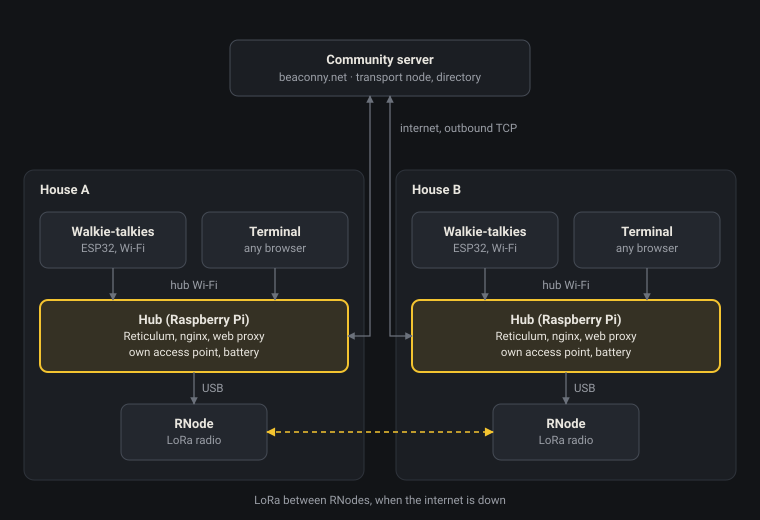

Purpose and principles
Each participating house runs one identical hub appliance that links its household's devices to the neighborhood over Reticulum. In normal times it rides the home internet connection; in an outage it falls back to LoRa radio. Volunteer stewards host the hubs in their homes for the good of the community.
The hubs are part of the Beacon Community Network, the community-run digital services platform for Beacon, NY. Today its services run on computers in Beacon: the Beacon Future Forum, shared Files, the City of Beacon Document Archive, Gitlab and a Kiwix library of Wikipedia, Project Gutenberg and Stack Overflow. The hubs extend that to computers in Beacon homes, so those services and new household ones keep working street by street when the internet doesn't.
- The community server in this document is the existing beaconny.net infrastructure, acting as the Reticulum transport node and hosting the directory.
- The offline library and archives on each hub are synced copies of the network's existing Kiwix, Files and document archive.
- Coordination for stewards happens in the Beacon Future Forum.
- Chapters: neighborhoods join as local chapters with their own identity. The Tree Streets Radio Club is the pilot chapter; later chapters can form the same way in other parts of town.
The design follows a few principles:
- Wi-Fi for adoption, radio for resilience. Everyday use runs over Wi-Fi and the internet, where it feels fast and fun. LoRa is the quiet safety net underneath.
- Appliance, not project. One standard image and one standard bill of materials, so every steward's box behaves the same way and one guide covers them all.
- Simple enough for non-technical stewards. Services start on boot, failures are visible, and the care card fits on one page.
- No router configuration. Hubs only make outbound connections, so nothing has to be opened or forwarded on anyone's home router.
- Repairable by the next generation. Prefer mature, open, well-documented parts that will still be fixable years from now.
System overview
Inside each house, walkie-talkies and terminals connect only to the hub's own Wi-Fi access point. Between houses, hubs connect out to the community server in normal times and fall back to LoRa between their RNodes when the internet drops.

The hub is the only part that speaks Reticulum; everything else in the house is a plain Wi-Fi client.
Hub hardware
The hub is a headless Raspberry Pi with an RNode for LoRa, a second Wi-Fi radio, a clock, an SSD and a battery. Any recent Pi the community already has can be repurposed; one 64-bit image that runs across the supported models keeps the setup and the guide the same in every house.
| Part | Role | Notes |
|---|---|---|
| Raspberry Pi (3B+ or newer) | Runs Reticulum, nginx, the proxy, MeshChat and Kiwix | Pi 4 or 5 with 2 GB or more is the comfortable choice; a Pi 3B+ (1 GB) suits a lighter hub without Kiwix. Use a heatsink case for always-on use. |
| RNode (ESP32 + LoRa) | Radio link between houses when the internet is down | On a long USB cable or coax run so the antenna sits high, near a window |
| USB Wi-Fi dongle | Second radio, so the hub can join home Wi-Fi and run its own access point at once | Choose a chipset with reliable AP-mode support on Linux |
| RTC or GPS module | Keeps correct time without internet (NTP) | GPS also gives every hub a shared time source |
| USB SSD | Boot and storage drive | Far more robust than an SD card against wear and sudden power loss |
| Battery / small UPS | Keeps the hub, RNode and access point running through power outages | Size it for the hub plus RNode; the home router is optional |
The hub never needs its own screen. Any device in the house with a browser is a terminal (see Terminal).
RNode display as a hub status screen
Many RNode boards have a small built-in OLED, and stock RNode firmware already lets the connected Pi draw on part of it. That gives the hub a simple status screen for free, with no extra display hardware.
- What stock firmware allows: an "external framebuffer", a 64×64 monochrome region the host writes over serial.
CMD_FB_EXT(0x41) switches it on or off, andCMD_FB_WRITE(0x43) sends the image: 512 bytes, 64 lines of 8 bytes, most significant bit first. - Already supported in Reticulum:
RNodeInterfacehasenable_external_framebuffer(),disable_external_framebuffer()anddisplay_image(). The Columba app uses this to show its logo on the RNode when it connects. - What the hub could show: link status (internet up, radio mode), a battery gauge, a new-message or voicemail count, and the hub's identicon so stewards can tell boxes apart. The Pi renders each frame with Pillow and pushes it when status changes.
- One serial owner: the process that runs the RNode interface owns its serial port, so display updates must come from inside the hub's Reticulum service, not a separate script.
- Full-screen control needs custom firmware: the firmware keeps the rest of the screen for its own radio status. RNode firmware is open source (dual GPL and commercial license), so a fork could hand the whole display to the host. The trade-off is maintaining that fork, or proposing full-screen control upstream as a configuration option.
Networking
Every hub keeps two Reticulum interfaces: a TCP link to the community server for normal times, and an RNode LoRa interface for outages. Because the TCP link is outbound, it passes through home NAT with no router changes.
- Normal times: hubs connect out over the internet to the community server, which acts as a Reticulum transport node. Traffic between houses is routed by destination hash, not IP address.
- Outage: when the internet link drops, traffic moves to LoRa between neighboring hubs. Addresses stay the same, so links and bookmarks keep working.
- Household side: the hub runs its own access point (via the USB dongle) for walkie-talkies and terminals. That way a dead home router doesn't cut households off from their own hub.
- Keeping LoRa quiet in normal times: Reticulum routes over whatever interfaces are up and announces on all of them. Two options to test: bring the RNode interface up by script when the internet link fails, or keep it up with a restrictive interface mode and low announce rate.
- HTTP stays off LoRa: only text, Micron pages and short voice clips should cross the radio. Full web pages are restricted to fast links (see Household websites).
Power outage behavior
| What fails | What still works |
|---|---|
| Internet only | Everything, over LoRa, at reduced speed |
| Grid power, hub on battery | Hub, access point, walkie-talkies, LoRa; home router and internet likely down |
| Hub battery exhausted | Nothing in that house; neighbors route around it |
Walkie-talkies and voice
The handhelds stay simple ESP32 Wi-Fi clients that stream audio to their own house's hub; the hub does all the Reticulum work. This keeps them cheap, long-lasting on battery and kid-proof.
- Hardware: the existing prototypes, ESP32 with an I2C MEMS mic and a DAC, in laser-cut enclosures branded for the Tree Streets Radio Club, the pilot chapter.
- Inside a house: walkie-talkies send plain PCM over UDP to the hub on the hub's access point. This replaces the current central UDP server.
- Between houses, fast links: the hub carries live push-to-talk over Reticulum's TCP link, where it should feel natural.
- Between houses, LoRa: voice degrades to short, heavily compressed clips (Codec2-style, encoded on the hub) or falls back to text. Live chatter over radio isn't realistic.
- Rollout: hand them out in small batches to friends on nearby streets, so there's always someone on the other end.
- Optional phones: a parent's Android phone running Sideband can join through the hub, without replacing the custom handhelds.
Hub voicemail
Adding a speaker, a microphone and a couple of buttons to the hub turns it into a voicemail box that works with no screen, no phone and no internet. The RNode's display shows what's waiting, and messages travel as short compressed audio clips, which suits LoRa far better than live voice.
Hardware additions
- Microphone and speaker: a USB audio adapter is simplest and works on any Pi; an I2S microphone and amplifier board on the GPIO pins is tidier inside an enclosure.
- Two buttons: one to play the next message, one to hold while recording a reply.
- Display: the RNode's 64×64 framebuffer area, as above.
How it works
- Receiving: a voicemail arrives as an LXMF message with an audio clip attached. The hub stores it and the RNode display shows a count, with the sender's name or identicon.
- Listening: pressing play plays the oldest unheard message through the speaker and marks it heard.
- Replying: holding record captures a clip, which the hub compresses and sends back to the sender's hub.
- Delivery when someone's offline: LXMF propagation nodes, such as the community server or chosen hubs, hold messages until the recipient's hub is reachable again.
Why it fits the radio
A 30-second clip at a Codec2-style 1,200 bits per second is about 4.5 KB, small enough to cross LoRa in reasonable time without hogging the channel. Over fast links the hub can use a higher-quality codec. Store-and-forward also means a voicemail tolerates patchy links that would break a live call.
Who it helps
It gives households without a spare browser device, including older neighbors, a way to send and receive messages. Walkie-talkie users could leave a voicemail for a house that isn't answering live.
Household websites
Every house can publish a normal HTML and JavaScript site from nginx on its hub, reachable by the rest of the community at a Reticulum address, with no router setup. It works like a Tor onion service: browsers speak ordinary HTTP to a proxy, and the proxy carries requests over Reticulum to the right hub.
Serving side (each hub)
- nginx serves the household's site on
localhost:80. - A small Reticulum service announces the site's destination and forwards each incoming link to nginx.
- The site's address is the hash of the hub's identity, so it never changes as long as the identity file is kept.
Browsing side (each hub)
- The hub also runs an HTTP-over-Reticulum proxy.
- Household devices get the hub as their proxy automatically, through a PAC file served on the hub's access point. Nobody configures a browser by hand.
- Ordinary sites go out normally; Reticulum addresses go over Reticulum.
Names and discovery
- Sites are addressed by hash, such as
http://c7258d22a83097b2b60500fe60d1630c, so people need friendly names. - The community server hosts a Beacon Community Network directory mapping names like
garden.beaconnyto hashes. The hub's proxy uses that map to resolve names. - Hubs can restrict pages to known community identities for neighbors-only content.
Radio-friendly fallback
When a site is only reachable over LoRa, the hubs switch it from HTML to Markdown. A Markdown page is usually a small fraction of the size of its HTML version, with no scripts, stylesheets or fonts, so it fits the radio's few kbps.
- Write once, publish twice. Households write their site in Markdown; the hub's site tool builds the HTML version for nginx and keeps the
.mdsource beside it. - The browsing hub picks the format. Its proxy knows whether the route to a destination runs over a fast link or LoRa. Over LoRa it asks for the Markdown version (an
Accept: text/markdownheader, or a.mdpath). - The browsing hub renders it. The proxy turns the Markdown into plain local HTML, so the reader's browser still shows a normal page, just a lighter one.
- Images become links. Over LoRa, images are dropped to their alt text plus a link, fetched only if someone asks.
The community-wide essentials (the directory and emergency info) can also be served as Micron pages through a NomadNet node, so they stay readable in NomadNet and MeshChat clients that don't use the proxy.
Starting point
The letsdecentralize.org guide pairs a Python Reticulum web server (rwebserver) with a browsing proxy, RetiHtmlProxy. It serves files itself rather than sitting in front of nginx, so the plan is to fork it so the server side forwards to nginx. Both are small, young projects, so treat them as code to harden, not finished appliance software.
Terminal
The terminal is a browser. The hub serves every interface as a local web page, so any device on its access point (an unmodified Chromebook, an old phone, a tablet, a laptop) becomes a terminal with no setup.
- Messaging and Micron pages: Reticulum MeshChat's web interface on the hub.
- Household websites: through the hub's proxy, as above.
- Offline library: Kiwix serving Wikipedia, repair manuals and local guides.
- Hub status page: battery level, which links are up (internet, LoRa), and plain-language warnings for the steward.
- Why not a Chromebook as the hub: ChromeOS runs Linux apps in a container that only starts after login, and used models vary too much to standardize. As a terminal, though, a Chromebook is ideal: screen and battery built in, nothing to flash.
Hub as a game machine
The first form factor of the hub could be an arcade-style game machine that plays community-made games available only on the Beacon Community Network. That makes the hub something households want on an ordinary day, keeps it plugged in and cared for, and gives people a reason to join that has nothing to do with emergencies.
Building on existing work
- Controls: the Cardboard Boxcade pattern, household switches and knobs wired to an ESP32 that sends input changes over Wi-Fi. Pointed at the hub's access point, the controls become another household Wi-Fi client, like the walkie-talkies.
- Wired controls: when the Pi sits inside the cabinet, buttons, joysticks, switches and knobs can wire straight to its GPIO pins, with no ESP32, battery or Wi-Fi in between. A small input service turns them into a standard gamepad device, so any game reads them like a normal controller. Analog knobs need an ADC board, since the Pi has no analog inputs. Alternatively, a small microcontroller (an RP2040 or ESP32, say) can read all the controls, including analog ones, and report them to the Pi over I2C, SPI, UART or USB. That keeps button debouncing and timing off the Pi, needs fewer GPIO pins, and makes the control panel a swappable module. Over USB it can even present itself as a standard gamepad, with no input service needed. Wi-Fi controllers remain the choice for separate or handheld controls.
- Cabinets: low-cost cardboard or laser-cut enclosures, following the Boxcade and the Modular Arcade Cabinet, built around a repurposed Pi and an old screen or tablet.
- Games: Godot games like those on AI Projects. Main Drag Beacon, a game set in Beacon, is a natural first network exclusive.
- Physical games: the cardboard Skee-ball machine (ESP32, coin acceptor switches behind the holes, NeoPixel strips and a Fire tablet scoreboard) shows the same pattern works for games that aren't on a screen.
What makes the games network-only
- Distributed only on the network: games are published to hubs over Reticulum, so the way to play is to join. Public sites can show them off without hosting them.
- Play between houses: stations in different homes make up one game, like a spaceship crew where each house runs a different panel. Game state is tiny, so co-op and turn-based play can work over LoRa; fast action needs the internet link.
- Neighborhood leaderboards: arcade and Skee-ball scores shared across the network, so the Tree Streets high score is real and local. A score is a few bytes and travels fine over radio.
- Community-designed: neighbors, and especially kids, make games and levels, with AI help where it's useful. Game jams fit the Beacon Future Forum and the Interface Research Lab proposal.
- Beacon tokens: coin acceptors can take Beacon Community Network tokens, a fun detail and a souvenir for chapter members.
Design constraints
- Pi performance: Godot web exports run poorly in a Pi's browser. The realistic route is a native ARM64 Linux export using the Compatibility renderer on a Pi 4 or 5. Heavier 3D games may still struggle, so test one on a Pi early. The fallback is the Boxcade setup: the hub serves the game, and a tablet or Chromebook in the cabinet plays it.
- Signed games only: games are code arriving over the network, so hubs only run games signed with the network's key.
- Sandboxed: games run as an unprivileged user, apart from the hub services, so a buggy or malicious game can't touch Reticulum, messaging or the isolation switch.
- Hub duties first: messaging, voicemail and isolation stay responsive while a game runs, and games switch off in an outage to save battery.
Stewardship
A hub's identity file is its address, so backing it up and handing it over properly matters more than any other steward task. Lose it, and the house's site, messaging address and links all break.
- Identity backup: at setup, copy the identity file to a USB stick kept with the care card, plus an encrypted copy on the community server.
- One standard image: every hub boots the same image, and all services start on boot whoever is logged in. A separate everyday user account keeps the stewarding parts out of casual reach.
- Care card (one page): what the lights and status page mean, how to restart, how to check the battery, and who to call.
- Handover guide: moving a hub to a new steward means moving the identity file, the box and the care card together.
- Shared knowledge: a community wiki on the hubs holds the build notes, troubleshooting and the history of each hub.
Remote isolation
In an emergency, such as a widespread AI-driven command-and-control operation, a network administrator can remotely take hubs off the communications grid. Remote commands can only reduce connectivity; restoring it always takes an action at the hub itself. A stolen or forged command can therefore cause an outage, but can never reopen a hub that was deliberately isolated.
Isolation levels
| Level | What goes off | What stays on |
|---|---|---|
| Off-Grid+ | Internet uplink: the hub's link to home Wi-Fi and its Reticulum TCP interface | The hub's own access point, LoRa |
| Off-Grid | Off-Grid+, plus the hub's access point and Bluetooth | LoRa |
| Dark | Everything, including LoRa | Nothing; restore only at the hub |
Off-Grid+ and Off-Grid keep LoRa running, so the neighborhood network keeps working and further commands can still arrive. Dark is the last resort.
How a command works
- Signed message: the administrator sends a small isolation command over Reticulum, signed with a dedicated Ed25519 key kept offline and separate from any everyday identity. Every hub image carries the matching public key.
- Any path: commands arrive over the internet link or over LoRa, so they still get through if the internet link is the problem.
- No replays: each command carries a sequence number and a target (one hub's hash, or all hubs). Hubs reject any sequence number they have already seen; sequence numbers avoid relying on hub clocks.
- Separate enforcer: a tiny root-owned service, apart from
rnsdand the web services, verifies the signature and applies the level withrfkilland the network tools. A bug in the other services can't trigger it. - Escalation only: a command can move a hub to a stricter level, never a looser one.
Restoring
- A steward restores the hub on site, with a physical button or by confirming on the local status page.
- A hub in Dark can only be restored with the physical button, since it has no radios on.
- Remote restore may come later, but only with stronger controls, such as two separate keys agreeing.
Rules for stewards and households
- The switch only controls the hub's own radios and links. It never touches the household's router or other devices.
- The RNode display and status page show the current level plainly, with who sent the command and when.
- Nothing stops a steward from unplugging the hub, and stewards agree to the feature before hosting one.
- Bluetooth is off in the standard image (
dtoverlay=disable-bt) unless something needs it, so it's never an exposure in normal times.
Key custody
- Initially one administrator holds the signing key. That's a single point of failure, both if the key is stolen and if the holder is unavailable.
- Keep an encrypted offline backup of the key from day one.
- Later, move to a small group of trusted stewards, any one of whom can trigger isolation, since isolation is low-risk to trigger.
Security posture
Treat Reticulum as capable but unaudited software, and design the hub so a bug in any one part can't take over the box. No public CVEs for the reference stack turned up as of November 2026. It has never had an independent security audit, though, and its own README warns it may still contain privacy- or security-breaking bugs.
Where the project stands
- No external audit yet: a 2024 community effort discussed a review with Trail of Bits, then paused it until the stack matures.
- Maintainer and licensing changes: an anti-AI and "no harm" license clause was added in April 2025, and the lead developer stepped back from public engagement in December 2025, though releases continue. The GitHub mirror lags the newest versions, and RetiNet (AGPL) is a community fork of the pre-change code.
- Ecosystem noise: the README warns of many LLM-generated fake implementations, guides and apps. Fetching the wrong package is a real risk.
- Young ports have bugs: a recent project found microReticulum's HMAC check broken, so packets were dropped while senders saw them as delivered. That was a correctness flaw, not a protocol hole, but it argues for caution with ports.
Hub hardening
- Install Reticulum only from the reference source or one deliberately chosen fork, and pin the version in the standard image.
- Run
rnsdas an unprivileged user, and give each hub app (web proxy, MeshChat, voicemail) its own user and instance, connected to the primary over a local Backbone interface. - Keep nginx, the HTTP proxy and the web interfaces as separate low-privilege services, reachable only on the hub's access point and over Reticulum.
- Protect community links with interface access codes (IFAC), so outsiders can't join the Beacon Community Network interfaces.
- Use Reticulum's blackhole management to block misbehaving identities, and consider a shared community blackhole list.
- Encrypt the off-site identity backups, and store the local copy with the care card, not on the hub.
- Roll out updates on one test hub first, then to the rest of the community.
Risks, limits and open questions
| Risk or limit | Mitigation |
|---|---|
| HTTP-over-Reticulum tools are young and small | Fork, pin versions, keep Micron fallback for essential pages |
| Heavy pages would swamp LoRa | Route HTTP over fast links only; size warnings in the site editor |
| Browsers mark hash sites "not secure" and may treat hashes as searches | Explain in the care card; use directory names and the PAC proxy |
| Site JavaScript that calls the outside internet breaks in outages | Encourage self-contained sites |
| Lost identity file breaks a house's address | Backup at setup; part of every handover |
| Single radio can't reliably be client and access point | USB Wi-Fi dongle on every hub |
| Battery hubs run down in long outages | Solar remains unsolved; size batteries first, solar later |
Open questions:
- Which LoRa activation approach keeps the radio quietest in normal times?
- Which USB Wi-Fi chipset is the standard?
- RTC module or GPS for timekeeping?
- Battery size and runtime target per hub?
- Live push-to-talk between houses: what latency is acceptable over the internet link?
Suggested build order
Start with the hub's own access point and battery, because that decides whether a power outage breaks things before the internet even matters.
- Hub access point plus battery: a repurposed Pi, USB Wi-Fi dongle, battery; walkie-talkies talk to the hub with the home router switched off.
- Hubs linked over the internet: two hubs connected through the community server with Reticulum TCP; walkie-talkie voice between houses.
- LoRa fallback: add RNodes, test failover and how chatty an idle network is on the radio.
- Household websites: nginx plus the forked web server and proxy, the PAC file, and the directory.
- Markdown fallback: build both formats, then switch by link type.
- Terminal and library: MeshChat, Kiwix and the status page in the browser.
- Stewardship kit: standard image, identity backup, care card and handover guide; first hubs out to Tree Streets families as the pilot chapter.
Sources
- Setting up a website over Reticulum – letsdecentralize.org
- RetiHtmlProxy – GitHub
- Reticulum RNodeInterface external framebuffer commit
- Columba rnode_interface.py
- RNode Firmware README
- markqvist/Reticulum README
- Security audit of Reticulum+LXMF, Discussion #628
- FOSDEM 2026 Reticulum community meetup slides
- solar_os PR #6 (microReticulum HMAC fix)
- Reticulum Community Wiki: RNS
- Reticulum Manual 1.5.5